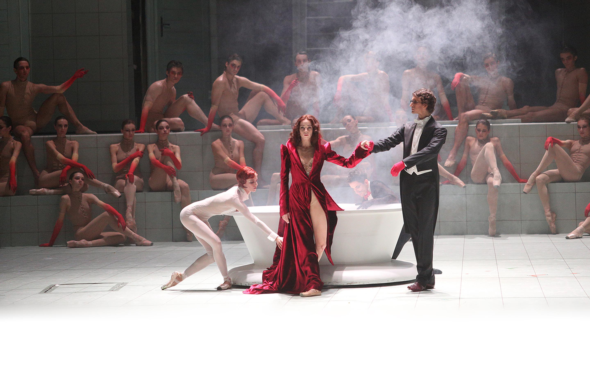
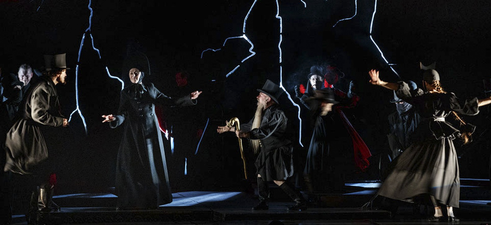

1
До спектакля
Зритель открывает страницу постановки, смотрит трейлер, знакомится с персонажами и режиссёрской концепцией.
AR-гид театра объединяет сайт с текстовыми, аудио- и видеоматериалами и webAR-механику, которая активируется при сканировании QR-кодов в театральном пространстве.
Пилотный кейс — «Мастер и Маргарита». В дальнейшем платформа масштабируется на другие постановки репертуара.
Мистический, многослойный и визуально насыщенный мир, наиболее подходящий для апробации webAR-сценариев.
AR-гид строится как двухуровневая система: сайт выступает основной средой доступа к контенту, а AR-слой дополняет его визуальными сценами через QR-коды.
Зритель открывает страницу постановки, смотрит трейлер, знакомится с персонажами и режиссёрской концепцией.
QR-коды на афише, в программке, фойе или возле костюмов запускают AR-сцены и дополнительные материалы.
Платформа сохраняет контакт со зрителем через постспектакльные комментарии, разбор символики и рекомендации.
Пилот разрабатывается на материале «Мастера и Маргариты», архитектура сервиса проектируется как масштабируемая на весь репертуар.

пилотмистическая драма / webAR-маршрут
Тестовый кейс, на котором апробируются ключевые функции: карточки персонажей, визуальные сцены, мультимедиа и маршрут вовлечения.
классическая комедия / адаптируемый контент
Пример адаптации единой цифровой структуры для классического репертуара с другой визуальной логикой.

масштабированиедрама А. Н. Островского / классический репертуар
Пример адаптации AR-гида для классической русской драматургии с акцентом на символику и режиссёрскую интерпретацию.
QR-код открывает AR-сцену прямо в браузере смартфона. Метки могут быть размещены на афишах, программках, в фойе и на театральных объектах.